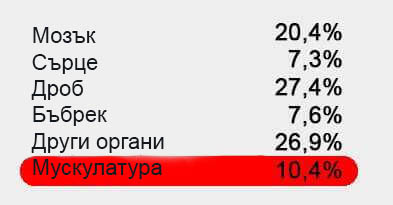
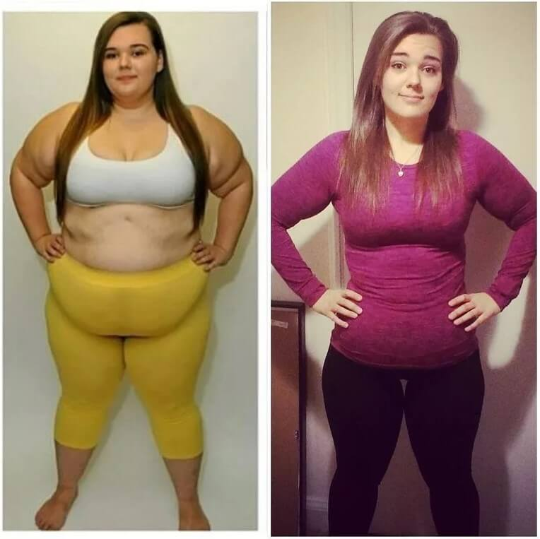

Разказва лекар-диетолог Филип Тотев.
Диетите, физическите упражнения, таблетките, липосукцията днес са основните методи за борба с излишните килограми, но понеже броя на пълни хора продължава да расте, нито един от тези методи не е ефективен.
Всичко се промени, когато се появи продуктът, стимулиращ естественото отслабване, но ще разкажа всичко по реда си.
Филип Тотев
Генетик, професор, лекар-диетолог. По настоящем специализира в България, Англия и САЩ. Стаж на работа – 15 години.
На него доверяват тялото и здравето си холивудски звезди.
С какво е опасно наднорменото тегло?
Първо място в България сред причините за смъртност, причинена поради наднормено тегло, заемат сърдечно-съдовите заболявания: артериална хипертония (повишено кръвно налягане), исхемична болест на сърцето, инсулт и инфаркт. Те обиват почти 20 милиона души годишно в света.
На второ място – диабетът, който през 2019 година стана глобална епидемия. По данни на СЗО, за последните 10 години, смъртността от диабета е достигнала 52%.
Анализ на заболеваемостта на населението сочи, че сред лицата, които не са доживяли дори до 50 години, 97% имали проблем с наднорменото тегло!
Излишните килограми са поради нарушен метаболизъм.
Всички ние знаем, че има хора, които си позволяват да ядат всичко в големи количества и остават слаби и опънати. А някои редовно спазват диети, спортуват и въпреки това напълняват. Последните изследвания потвърждават, че всичко се крие в различния метаболизъм, а по-точно в нарушенията му при хора с наднормено тегло.
Защо мнозина не достигат желания резултат при опит да отслабнат с диети?
Ако започвате да спазвате диета, организма получава по-малко калории, а за него това е знак, че започва "гладуване". Активират се защитните реакции и за да се спаси "от смърт" (за хилядолетия на съществуване хората са придобили навици – процеси за защита на организма от глад))организмът при диета започва да трупа колкото се може повече енергия във формата на запас от мазнини и ги изразходва колкото се може по-малко. Човек става муден и апатичен, без възможност да прави каквото и да е. И в същото време организмът се старае цялата енергия от приема на храна да запази като запас от мазнини, за да ви защити "от смъртта" (това е само защитна реакция на организма).
Защо упражненията не помагат на всички да отслабнат?
Как се изразходва енергията в организма, получена от приема на храна:
Както нагледно се вижда, за мускулите се използва само малка част енергия, получена от храната. По този начин когато се опитвате да изгаряте мазнини с физически натоварвания, е необходимо много и много силно да се изпотите, организма така е устроен, че за мускулите се използва много малка част от енергията.
В противен случай ние вече след денонощие гладуване нямаше да може да се движим. Просто нямаше да имаме сили, за да се движим, обаче човек може без храна много дълго. През първите 7-10 дена дори това няма да е риск за здравето. «Книгата за рекордите на Гинеса» фиксира 102 дена без храна, Именно затова повечето физически натоварвания не дават желания ефект.
ИМА ЛИ СПАСЕНИЕ?
Научноизследователски институт по Диетология при МЦ Света София успя да създаде високоефективен препарат за борба с наднорменото тегло въз основа на научни разработки, а също така да направи продукта достъпен за абсолютно всеки!
Средството се казва и представлява препарат за изгаряне на мазнини. Благодарение на внимателно подбраните съставки, дълбоко прониква в организма заедно с храната и избирателно въздейства на структурата на мастните отлагания, нормализира обмена на вещества и мазнините изчезват по естествен път.
В състава си съдържа микроелементи, провокиращи в организма на човека изгарянето на подкожни мазнини. В частност това е екстракт от див копър, който е супер-антиоксидант, нормализира метаболизма, възстановява работата на ендокринната система на целия организъм и мазнините стремително биват изгаряни по естествен път.
Също така синтезира гликоген, отговарящ за изпращането на сигнала "аз съм сит" в мозъка и чувството на глад се изпитва много по-рядко и с по-малка интензивност.
Препаратът е абсолютно натурален и е активен стимулатор на естествените процеси в организма на човека. Доколкото изгарянето на мазнините става за сметка на бързия метаболизъм, диета не е необходимо да се спазва. За да подкрепяте метаболизма си, е достатъчно стандартно и балансирано хранене, без да има нужда от физически натоварвания.
Основните свойства на :
- Изгаряне на висцерална и коремна (подкожна) мазнина
- Нормализация на метаболизма и ендокринната система
- Потиска апетита по време на курса на прием на препарата
Благодарение на бързия метаболизъм у хората, които приемат подкожната мазнина в проблемните зони може да бъде изгаряне със скорост до 500 грама за денонощие!Средството е ефективно дори в случаи, когато вината за наднорменото тегло е хормоналния дисбаланс.Ако сте предразположени към напълняване – този продукт е за вас!
В България този продукт се появи относително скоро, но вече успя да се утвърди на пазара като любим продукт на много треньори по балет, танци, както и в професионалния тежък спорт за максимално бързо отслабване иподдържане на ниския процент на мазнинив организма и запазване на силите и издържливостта.
Коментари на специалисти и клинични изследвания
Kelly LeVeque
Лекар диетолог-ендокринолог, известен диетолог от Холивуд.
Диетолог, експерт по храненето и здравословния начин на живот, която консултира знаменитостите.
кандидат на медицинските науки, гр. Лос Анджелис.
Работен стаж - 19 години.
"Най-главното при отслабването – да не си навредите на организма. За съжаление повечето популярни методи за отслабване не могат да се похвалят с това. Не може да се спазва постоянна диета, а и малко хора издържат да спазват диети. Без да постигнат целта, хората пробват таблетки, които зле влияят на организма, като провокират хормонален дисбаланс, водят до нарушения в имунната ситема и черния дроб. Отслабването трябва да е по естествен път и да не нарушава вътрешните процеси в организма.Днес е единственото средство, което отговаря на тези задачи. Активните микроелементи в препарата провокират ускорението на метаболизма и изгарянето на подкожните мазнини поне 10 пъти по-бързо. Аз съм убедена, че това е най-добрият продукт в съвременната диетология. Също така е проверен продукт, на който може напълно да се доверите."
Клинични изследвания
Група на изпитани (97 човека), имащи наднормено тегло, в продължение на месец е приемала ежедневно под формата на хранителна добавка, без да правят промени в обикновения им начин на хранене. По време на изследването са получени следните резултати:
1.Отслабване с от 12 до 15 кг
– при избавлении от веса в 15кг – 100%
– при отслабване с 12 кг от общото тегло – 100%
*Под отслабване в случая се има предвид подкожните мазнини и отбелязаното им отсъствие за 1 месец.
2. Забележимо подобрение на метаболизма.
3. Повишаване на тонуса и физическата активност.
4. Подобряване на работата на черния дроб и ендокринната система.
Доказано е, че оказва мощно влияние на ускоряването на метаболизма и изгарянето на подкожни мазнини. се препоръчва на хора, които страдат от наднормено тегло, хора с нарушен метаболизъм и страдащи от захарен диабет.
Сравнение на различните методики за отслабване:
След дълги преговори успяхме да пуснем държавната програма по разпространение на . Целта на програмата – да се даде възможност на всекиго да се отърве от излишните килограми, независимо от финансовото му състояние.
За да участвате в акцията и да получите с намаление, преминете към официалния сайт на продукта.
Диана, само не злоупотребявайте с дозировката, понеже, ако бъде подценен – продуктът може да е много силен и вместо да отслабнете с 10 – можете да отслабнете с 20 кг.
Аз отслабнах с 31кг, тежах цели 94кг. Помня колко ми беше тежко в началото, не знаех дали ще стане или не. Много беше сложно. Особено когато няма подкрепа, но ми помогна да изгоря мазнините, не можех и да очаквам подобни резултати!

Момичета, не слушайте никого, че няма да отслабнете, че няма да можете и тн. Аз нали успях и това е след като родих третото си дете. Значи и вие ще можете! Препоръчвам на всички , само той ми помогна.
За съжаление не мога да се похваля с дългосрочни резултати, защото приемам само от седмица но няма да ми повярвате – за първите 7 дена отслабнах с 3 кг и останаха само още 18! Ще успея! Трябва да успея!
Калина, значи не сте прочели добре инструкцията – раздела за начина на прием. Моля да се запознаете внимателно отново и да пробвате да приемате продукта съгласно инструкциите!
Здравейте, с отслабнах с 41 кг за 2 месеца. Вече мина доста време и си запазих теглото! Ето моя снимка:
И аз успях да отслабна! Желая късмет на всички, стискам ви палци!
Имам широки кости, но ми помогна много. Огромната разлика от преди и след сега се вижда. Не очаквах, че ще мога да отслабна почти с 40кг (засега с 37). Самочувствието ми е просто отлично! Такова решение за такива като мен е просто идеално! Препоръчвам ! Ето и моите резултат:
Преди началото на приема на тежах 90кг. Като млад винаги бях висок и слаб, обаче с възрастта ми се появи корем, и в хълбока събрах мазнини. На 35 разбрах, че спешно трябва да предприема нещи. Почнах да спортувам, честите трениторки никак не ми помагаха да постигна предишното си тяло. След това добавих към храненето и буквално за няколко седмици се превърнах в човека, когото познавах и виждах в огледалото като по-млад. Сега пазя тялото си, а и винаги имам на разположение 2 опаковки за всеки случай
За мен стана истинско спасение. Преди няколко години претърпях тежка катастрофа и почти 8 месеца бях на легло. Тогава напълнях с 32 кг! Постепенно започнах да ходя с бастун, но физическите упражнения бяха противопоказани на първо време, защото бях още слаба. Попаднах на благодарение на мъжа си, който докато ме лекуваше търсеше продукт, с който да мога да отслабна. След пътуване извън страната – се върна с 6 опаковки. Разбира се, реших да се възползвам и да пробвам подаръка на съпруга ми. Първите промени забелязах след седмица, но не толкова, че отслабнах – а по-скоро усещането, че организма задвижва нещата. По-бързо сякаш се преработваше храната. Физически се чувствах така, сякаш бях забързала метаболизма си. След първия месец, отслабнах с 10 кг – без да правя промени по начина си на хранене и без тренировки! Останалите 22 кг изчезнаха, като добавих и лека физическа активност – основно ходене. Бях много щастлива, че имам късмет със съпруга ми, който е попаднал на , иначе не си представям какво щеше да ми се случи с моите 89 кг. Радвам се, че вече го има в България. Това е спасение за всички.
След раждане ако се пълнее, трябва спешно да се спортува на пътечката по няколко часа, но съм чувала, че за ставите не е добре, понеже е като да скачаш с излишни килограми, ставите просто не издържат. А другия вариант е като мен да го приемате, много е удобно така да се възстановява човек. Странното е, че обикновените хора разбират за него само сега. Аз постигнах това на снимката по-долу! Продължавам в същия дух
А не сте ли пробвали да престанете да ядете постоянно? Когато сте деца е ясно – дават ви да ядете и слушате. Но когато сте вече възрастни лели, толкова ли е трудно да се контролирате и да не ядете?
Дарина, ако Вие не знаете, има хора, които имат генетична предразположеност за наднормено тегло и нито диети, нито лекарства могат да им помогнат. Ако не сте от тях, имате късмет – но ви уверявам, че не всички знаят какво е да са на ваше място.
Дарина, аз почти нищо не ям, но това не помага. Килограмите ми са замряли и не отслабвам грам
Очудена съм, че пишете сякаш за знаят само диетолозите. Благодаря! Само за 1 пълен курс с отслабнах почти с 30 килограма, много големи промени, просто огромни. Е, и с торти не се тъпча, но с друго не се ограничавам. Ако искам картофи – ям картофи. СНИМКИ ПРЕДИ И СЛЕД
Защо са тия всички стандарти? Защо всички трябва задължително да са слаби? Аз съм 167 см висока и тежа 79 кг и не ме е срам. Много се харесвам и се чувствам чудесно!
Malika, тенденцията на XXI век и модата буквално кара повечето жени да изглеждат като модели, и най-често това влияе на здравето. Затова и бе създаден този препарат, който предизвиква загубата на излишните килограми и без да вреди на здравето.
ПОМОГНЕТЕ МИ! ТРЯБВА СПЕШНО ДА ОТСЛАБНА С 9 КГ!!!! Седя вкъщи вече година след бременноста и от два месеца спазвам строга диета, но не отслабвам, какво да правя? SOS!!!!! Не мога така повече, нямам време за фитнес... а и съм мързелива, признавам си. Помогнете, моля
Снежана, мързела, признавам Ви – не е най-доброто човещко качество, но за щастие съществува , - това е точно това каквото.
Дори жена ми не можа да отслабне. Като се оженихме беше 53, но сега тежи 68. Най-лошото е, че тя е доволна и не иска да отслабва – пази си здравето. Наистина е факт, че свикват
Милене, да така е – но ако не ви е удобно, можете да и купите , може би ще помогне. Във всеки случай, капсулите отлично работят и действат като хранителна добавка.
Анна, съветът ми е просто да пиете курса и това ще е достатъчно в дългосрочен план, важното е и да следите за начина на хранене за по-добър ефект.
Тежа 97 кг. ПРОТИВНО МИ Е. Не знам какво да правя. Не искам да стигна 100 кг. Какво да правя??? Помогнете ми!! Къде да купя " " в аптеките??????
Биляна, без паника, всичко по реда си. За съжаление, тези капсули не се продават в аптеките, вече обосновах причината по-горе в коментарите. Второ, поръчайте и спазвайте инструкциите, ако искате желания ефект.
Здравейте! Майка на две деца съм и от край време се опитвам да отслабна. Не мога да спазвам диети, последния път бях много разочарована и сега ям много. Никога не съм имала време за спорт. Прочетох тази статия и сега имам някаква надежда, но исках да разбера повече (например, мога ли да добавям тези капсули в някоя напитка или е задължително да ги пия отделно). Има ли инструкция в кутията? Или може би някаква рецепта? И няма ли да има обратен ефект, ако спра приема? Ако е възможно да ми отговорите на въпросите ще съм Ви благодарна или ми кажете къде да прочета повече. Благодаря много.
Щастлива съм, че случайно попаднах на тази статия. Никога не съм си мислела, че ще съм слаба в този живот. Започнах приема на само преди две седмици и вече отслабнах с 4 килограма. Не промених нищо в начина си на живот, всичко е като преди, но само намалих малко количеството храна. Моя животински глад изчезна. Общо взето, не знам кой го е изобретил, но този продукт е вълшебен. Огромно благодаря и поклон.
Това нереално чувство – наистина да искаш нещо, а то накрая и да ти се получи. Случи се чудо. Отслабнах с 10 килограма и продължавам в същия дух. Моито приятели не могат да разберат какво се случва. Мислят си, че спазвам строга диета, обезпокоени са. Обаче аз нищо не им казвам и ги оставям да се съмняват
Боряна, Вие не трябва мен да благодарите. В нашия център работим всеки ден за обикновените хора, които искат отново да живеят пълноценен и здравословен живот.
Къде го купихте? В аптеката до нас го няма, а ме е страх през интернет да поръчвам.
Задължително ще го пробвам и ще пиша за резултатите след това. Тази година влизам в университет. Искам да започна живота си на нова страница с ново тяло. В училище търпях обиди от момчетата, всички ме смятаха за дебела. Сега ще отслабна с около 10 килограма, а в университета ще ме смятат за кралица!